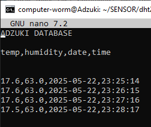

ps This page is broken on desktop. hope ur on mobile lol V.1.6

Adzuki is the name of my millipede, named after the adzuki bean. He prefers a temp of 21-24 deg C and humidity of 70-80% and what better way to make him comfy than with an automated vivarium. Controlled by a RPi 02w and coded in python :)

Components Cost
RPi 02w -------------- $25.45
Relay Board -------- $22.45
DHT22 Sensor ----- $10.99
Ceramic Heater ----- $6.49
Mist Unit ------------- $27.60
Cooling Fan --------- $14.00
2.23'' OLED --------- $20.95
LED Strip ------------ $6.00
2 voltage regs. ----- $5.00
Micro sub. pump - $4.49
Total ---------------- $138.56
I wired in 5 buttons. A keyboard switch on top to cycle through the menu screens on the OLED, and 4 buttons under the screen which are as follows [(top to bottom):toggle hand/auto mode, manual control relay 1, relay 2, relay 3].


Here you can see I have got my script logging the sensor readings as well as date and time into a .csv file. All 4 variables are seperated by a comma so I can easily pull them out again
and send them to my webpage or text them to myself maybe I'm not sure as of yet. I might make a script that automatically gitbash/pushes the updated file to my github/website. Or maybe
I'll finally figure out how to host an actual database/backend for my site and use SQL.
Probably have to make it so the file rewrites over itself after x amount of entries so I don't
end up with ungodly sized file. I have it log the reads once a minute so maybe I'll have it rewrite itself after 10,080 lines/entries. Thats 1 week worth of reads/minute. Probably not that much data even, considering I have
a 256 GB sd drive on my pi controlling the terrarium. But still I kind of want to set it and forget it and not have to worry about it filling up my drive after a few years of continous service